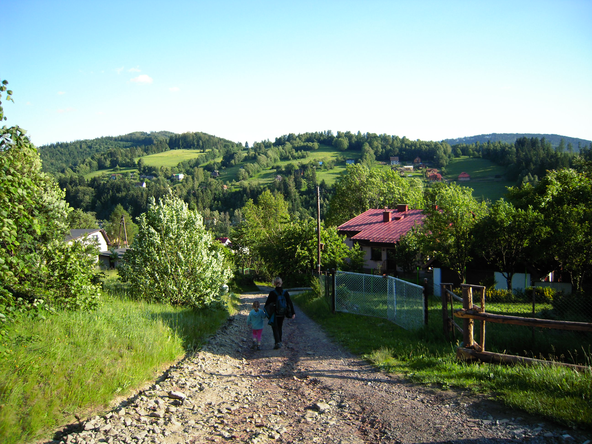
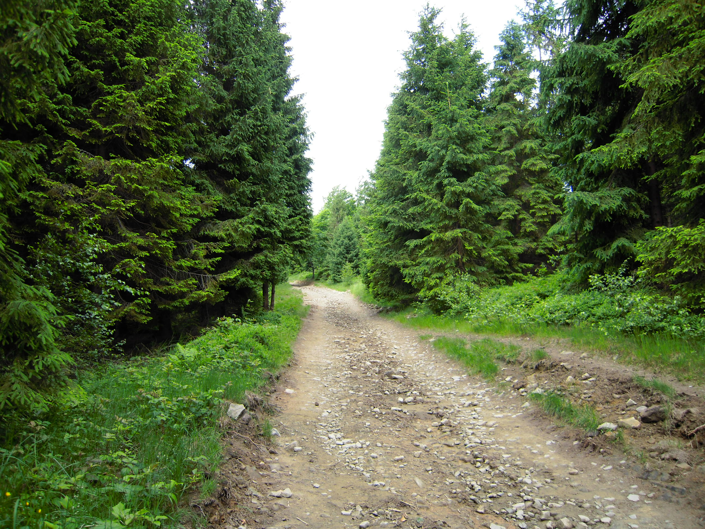
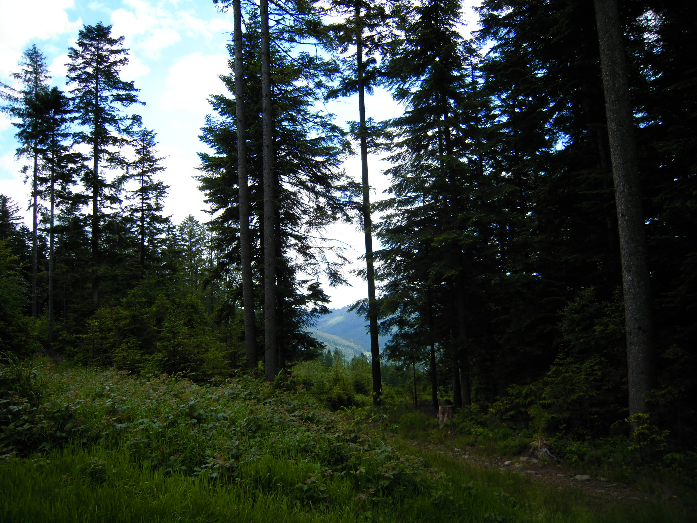
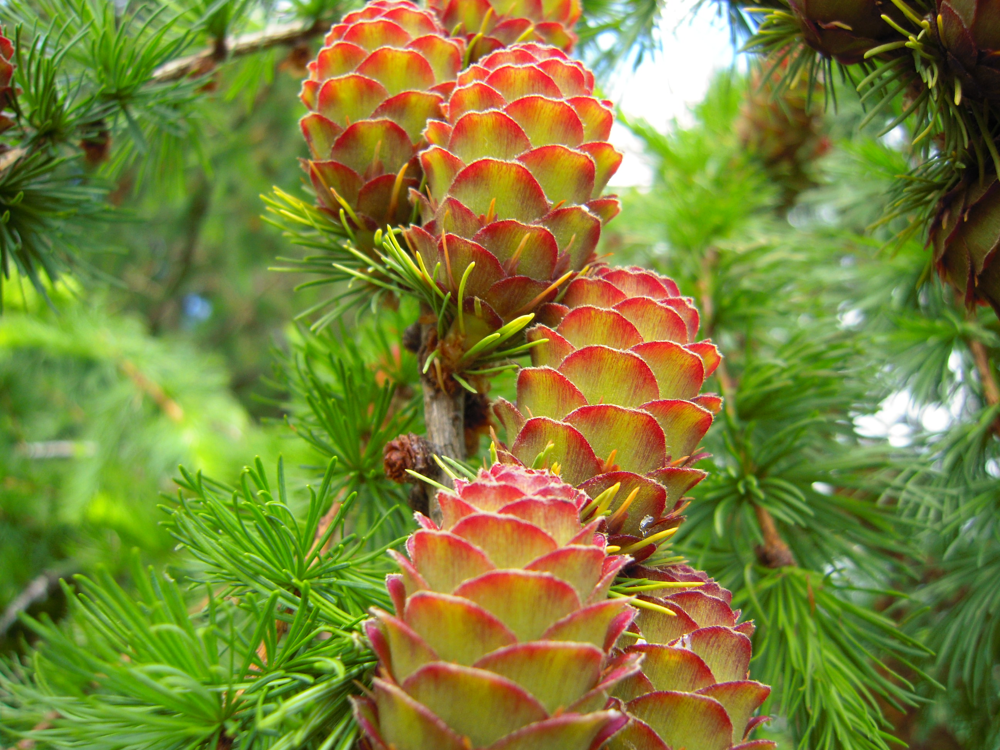
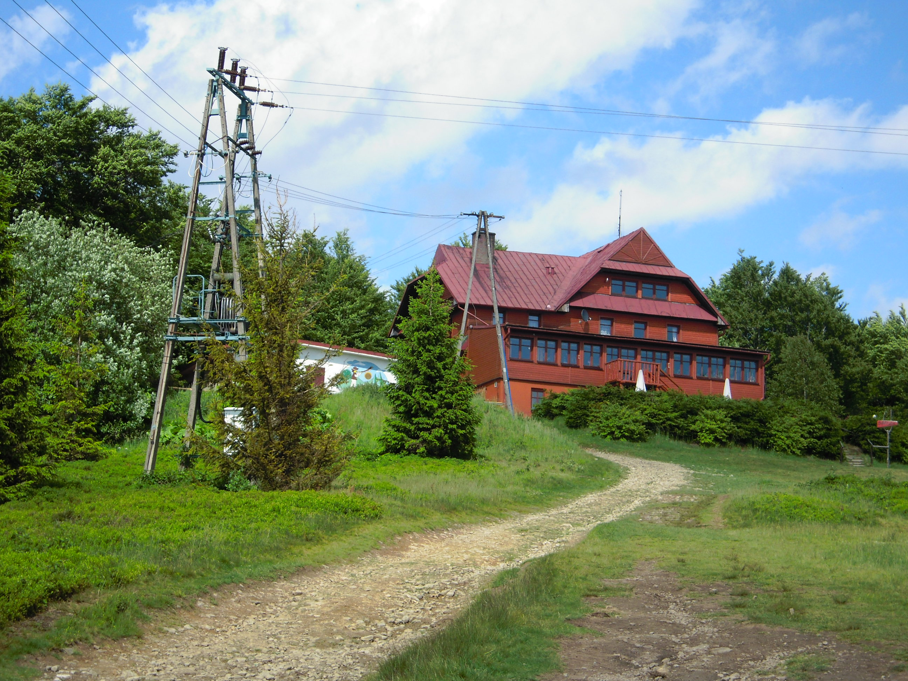
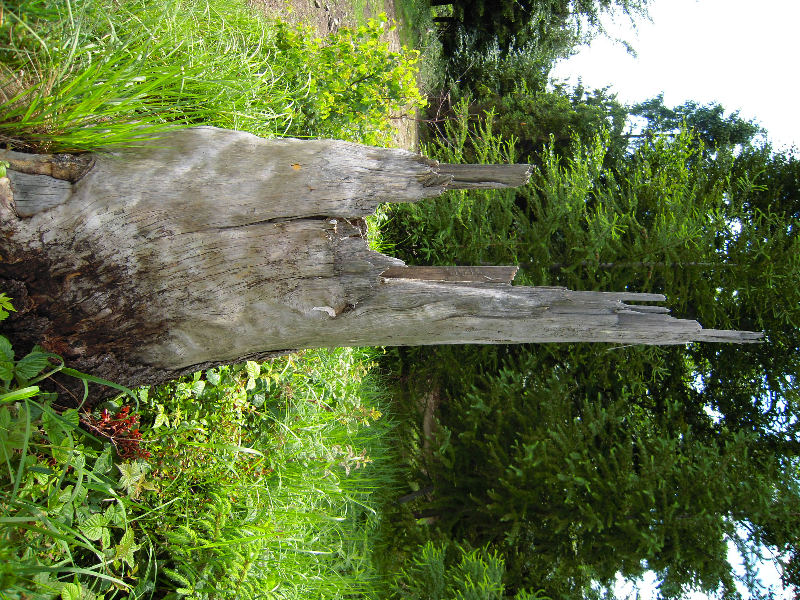

Weekend Escape
Błatnia, Beskid Śląski
A peaceful mountain escape in Beskid Śląski, held for now as a short travel note in motion.
Błatnia
Beskid Śląski
Poland
Weekend Escape
A peaceful mountain escape in Beskid Śląski, held for now as a short travel note in motion.
Watch Video
A quick glimpse from Błatnia, saved as a small weekend note from Beskid Śląski.
Read the Journey

This is one of the walks I remember many years later.
The trail to Błatnia passes through forests, rocky paths, and open views across the Beskid hills. It is not a difficult route, which makes it easy to slow down and notice small details along the way.

One of those details was the larch tree with its colourful young cones. Unlike most conifers, larch loses its needles every autumn and grows fresh ones every spring.


Near the top stands the mountain shelter on Błatnia. Hikers have been stopping here for generations. The first shelter was built in the 1920s and became a well-known meeting place for people exploring the Beskid Śląski.


Looking back, I do not remember the distance or the time spent on the trail.
I remember the forest, the quiet, and the simple pleasure of walking through the mountains.